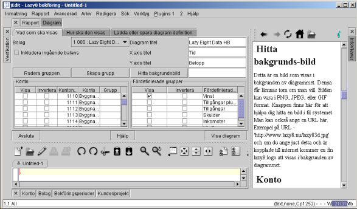
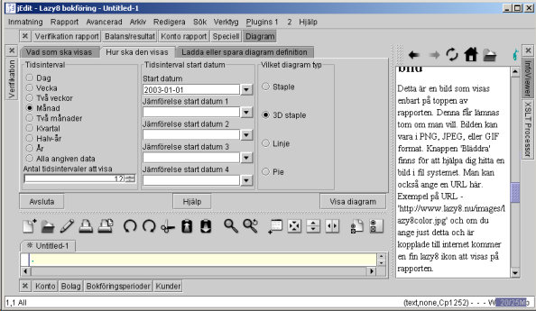
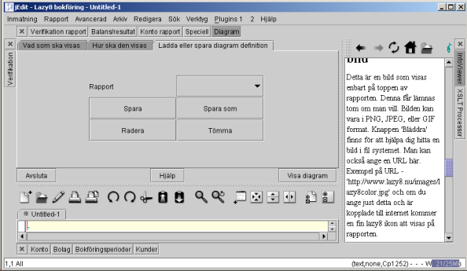
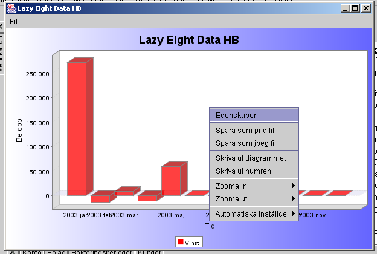

|
|
Detta beskriver hur man kan skapa Denna sida beskriver hur man skapa stapel, pie och linje diagram för analys av dina konto. Med denna kraftig verktyg kan du får en snabb överblick av ditt bolag. Du kan visa rörelser i alla konto under vilket tidsinterval som helst. Det är möjligt att gruppera konto tillsammans under ett namn och en summa och det finns grupper som är fördefinierade, t.ex., vinst, tillgångar, skulder, inkomster och utgifter.
Det finns en till dimension till analysen. Du kan jämföra upp till 5 olika tidsinterval sida vid sida. T. ex. för att jämför 2 tidsinterval kunde man jämför varje månad av föra året med varje månad av detta år, alltihop i ett enda diagram.

Alla fält som krävs för att definiera ett diagram finns nedan:Bolag
Detta kan bara rapportera ett bolag i taget. Här måste du välja det bolag som skall skrivas ut. Om du bara har ett enda bolag skall detta vara förifyllt och oåtkomligt. Se Inställningar för mer information om hur man väljer ett basbolag att arbeta med.
Inkludera inkommande balans
Detta är en av de viktigaste parametrar till skapelsen av diagrammet. Om detta är ikryssat, kommer alla tillgångar och skulder att visas som en ackumulerade summa. Denna summa innehåller alla rörelser i kontot upp till detta tidsinterval. Kort sagt, detta visar balansen i konton. Om detta är inte ikryssat kommer alla tillgångar och skulder att visas som bara rörelser i konton under angiven perioden. Detta påverker inte inkomster eller utgifter.Radera och skapa grupp knappar
Man har möjligheten att skapa eller radera grupper av konto som du bestämmer har något gemensamt som borde visas i diagrammet under ett namn och en summa. När du slår 'Skapa grupp' knappen visas en lista av alla konton som är inte redan grupperat. Bara välja konton du vill gruppera och ange ett namn för gruppen. När man slår 'Radera grupp' knappen visas en lista av alla grupper och man kan välja gruppen man vill radera.Diagram titel
Angiven text i detta fält visas högst upp på diagrammet i ett stort teckensnitt.X axis titel
Angiven text i detta fält visas på botten av diagrammet för att visa vilken enhet x axis har. Fast, man kan ange vad som helst här eftersom det är självklart att denna axis är tiden och kanske inga vidare förklaring krävs.Y axis titel
Angiven text i detta fält visas i sidled på den vänstra sidan av diagrammet för att visa vilken enhet y axis har. Det kunde vara bra att ange vilken typ av valuta används t.ex 'Euro', 'Kronor' eller 'US Dollar'Hitta bakgrunds-bild
Detta är en bild som visas i bakgrunden av diagrammet. Denna får lämnas tom om man vill. Bilden kan vara i PNG, JPEG, eller GIF format. Knappen finns här för att hjälpa dig hitta en bild i fil systemet. Man kan också ange en URL här. Exempel på URL - 'http://www.lazy8.nu/lazy83d.jpg' och om du ange just detta och är kopplade till internet kommer en fin lazy8 logo att visas i bakgrunden av diagrammet.Konto
Här visas en lista av alla konto för bolaget. Kryssa i 'Visa' kolumnen för att välja vilka konto som ska visas i diagrammet. I vissa konto är det alltid en negativ balans och i diagrammet är det kanske bättre att visa den absolut värden av konto balansen. Kryssa i 'Invertera' kolumnen för att invertera just ett sådan konto. Att behandla ett konto så här visar inte riktig absolut värden av balansen men den inverterade värden. T.ex. om du har ett negativ värde i kontot kommer det att visas som positiv. Om du har ett positiv värde kommer det att visas som negativ. Detta används mest för konto som är skulder eller inkomster. Om du har skapat en grupp av konton visas grupp namnet i 'Grupp' kolumnen. Man kan inte ta bort visning av ett grupperat konto igenom att ta bort kryssen från 'Visa' kolumnen. Man måste radera gruppen istället.Fördefinierade grupper
Här finns några mycket användbara fördefinierade grupper som du kanske vill visa i diagrammet. De beskrivs nedan:
Vinst
Välj denna grupp för att visa vinsten i diagrammet. 'Inkludera inkommande balans' val möjligheten kommer inte att påverka just vinsten.
Tillgångar plus skulder
Välj denna grupp för att visa summan av Tillgångar och skulder i diagrammet. 'Inkludera inkommande balans' val möjligheten kommer att påverka denna grupp och i sådana fall kunde man kalla gruppen för 'Kapital i bolaget' eftersom det är just detta det blir. Men, utan 'Inkludera inkommande balans' valet kommer denna grupp att visa exakt samma sak som vinst gruppen.
Tillgångar, skulder, inkomster och utgifter
Dessa grupper visar summan av deras respektive konto.

Tidsinterval
Här kan du välja hur länga varje tidsinterval ska vara i diagrammet. Om man väljer 'Alla angiven data' visas enbart en period.Antal tidsinterval att visa
Detta är hur många av Tidsinterval ska visas i diagrammet. Om man väljer 'Alla angiven data' används inte denna fält eftersom enbart en period visas.Tidsinterval start datum
Enbart den första start datum i lista krävs. Vanligtvis är det enbart den första start datumet som används. Om man ska jämför två tidsinterval sida vid sida på ett enda diagram måste du fylla i 'jämförelse datum 1'. Om man vill jämför flera tidsinterval kan man jämför upp till 5 jämförelser..Vilken diagramtyp
Här kan man välja vilka typer av diagram att visa. Alla visa samma sak (förutom pie diagram) så att det är bara en smaksak vilket man ska välja här. Pie diagrammet är mycket ovanligt och möjligtvis oanvändbart. Men, om du gillar det kan du använda det. Annars låt bli.

Rapport
Här kan du välja en fördefinierade diagram.
SQL fråga fönster
Här kan du mata in diagramdefinitionen om du kan SQL programmering. .
Spara
Om du har skrivit en ny diagramdefinition (troligen inte) då kan du då använda denna knapp för att spara din definition under det namn som finns i Rapportfältet. Men du skulle nog istället använda "spara som" kappen som beskrivs nedan.
Spara som
När du har skrivit en ny diagramdefinition (troligen inte) då ska du trycka på denna knapp och du blir då tillfrågad om ett namn för den nya rapporten. Detta namn ska sedan visas i det föregående Rapport fältet .
Radera
Akta dig här. Detta kommer att radera diagramdefinitionen som vissas i det föregående Rapportfältet.
Tömma
Detta ska tömma det föregående SQL fråga fönstret.

Visa diagram knappen
Denna knapp skapar och visar diagrammet som definierades. Diagrammet dykar upp i ett annat fönster som har sina egna menyer för att spara, skriva ut och t.o.m ändra några egenskaper av diagrammet.
Man kan höger-klicka var som helst på diagrammet och få upp en meny för zoomning.
Det är viktig att du dra ut eller krympa fönstret innan du spara diagrammet eftersom storleken av fönstret är exakt vad sparas i filen. Men, utskrifterna påverkas inte av fönster storlek och utskrifterna fyller alltid en hel sida.
Exit
Lämna denna skärmHjälp
Visa en hjälpskärm om denna diagramdefinition.
|
|
Copyright 2002 Lazy Eight Data HB